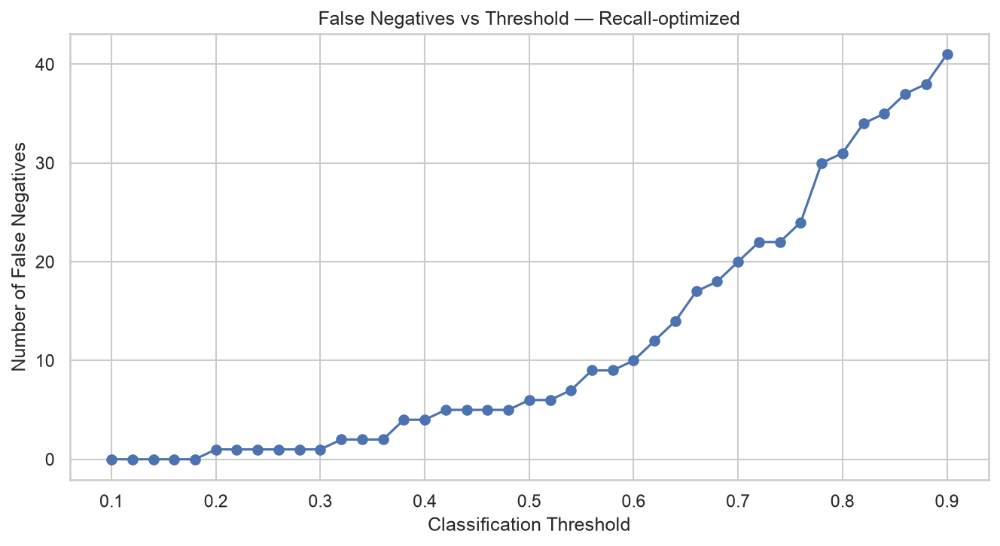

Credit Approval Prediction
Pipeline completo de Machine Learning para predecir decisiones de aprobación de crédito, con especial atención a la prevención de data leakage, optimización de modelos y análisis de decisiones.

01 · PROBLEM
Predecir una decisión de aprobación
El proyecto utiliza el dataset Credit Approval de UCI para desarrollar un modelo capaz de clasificar solicitudes de crédito en dos clases: aprobadas o rechazadas.
02 · DATA
Un dataset pequeño y anonimizado
Las variables originales están anonimizadas, por lo que el modelo puede identificar capacidad predictiva, pero no permite interpretar directamente variables como ingresos, segmentos de clientes o características demográficas.
03 · LEAKAGE-FREE DESIGN
El test permanece aislado
El conjunto de test se separa antes de cualquier decisión de preprocessing o modelización. La imputación, el escalado y la codificación se integran dentro de pipelines de scikit-learn y se ajustan únicamente dentro de los folds de validación cruzada.
Train/Test split → Pipeline → Cross-validation → Hyperparameter optimization → Final test evaluation
04 · MODELS
Tres modelos, dos objetivos
Se compararon Regresión Logística, Random Forest y XGBoost mediante validación cruzada estratificada. Los hiperparámetros se optimizaron de forma independiente para Accuracy y Recall.
Accuracy
Objetivo orientado a maximizar la proporción total de decisiones correctas.
Recall
Objetivo orientado a reducir falsos negativos y detectar una mayor proporción de solicitudes aprobadas.
05 · RESULTS
El rendimiento depende del objetivo
El modelo optimizado para Accuracy alcanza 0,891 de Accuracy y 0,960 de ROC-AUC. La optimización orientada a Recall alcanza un Recall de 0,902, reduciendo los falsos negativos de 9 a 6.
06 · THRESHOLD ANALYSIS
El umbral cambia la decisión
El análisis estudia Precision, Recall y F1 a diferentes umbrales en lugar de asumir 0,5 como punto de decisión universal.
07 · BUSINESS INTERPRETATION
Rendimiento predictivo ≠ valor económico
El modelo puede apoyar decisiones de crédito, pero el dataset no contiene información suficiente para calcular rentabilidad, pérdida esperada, probabilidad de impago, recovery rate, customer lifetime value o coste de capital.
Por tanto, la importancia predictiva de una variable no debe interpretarse automáticamente como una conclusión causal o comercial.
08 · LIMITATIONS
Limitaciones
- Solo 690 observaciones.
- Dataset antiguo.
- Variables anonimizadas.
- Sin información económica sobre el coste de los errores.
- Sin validación temporal.
- La importancia de variables no implica causalidad.
09 · TECH STACK